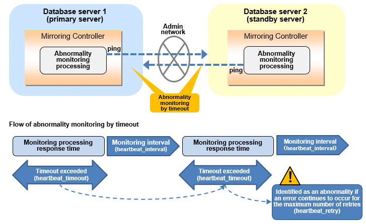
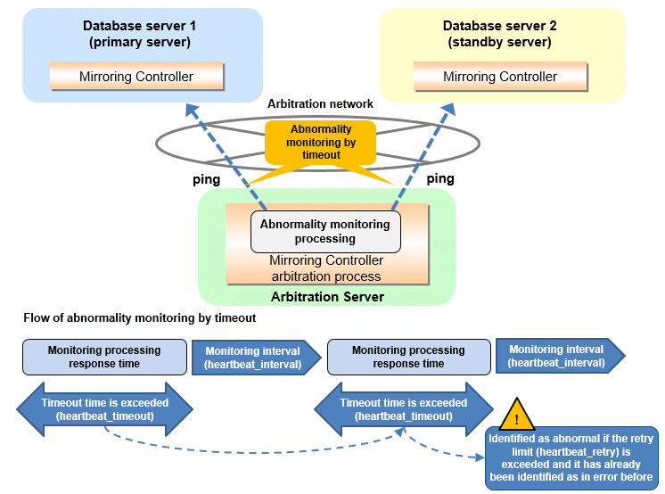
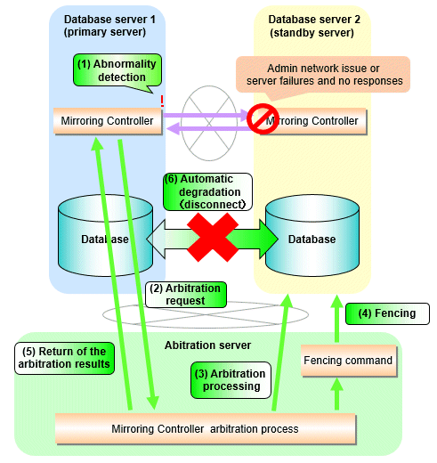
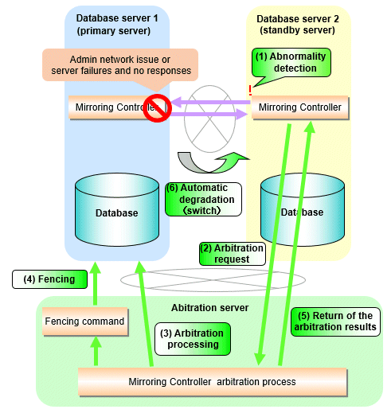
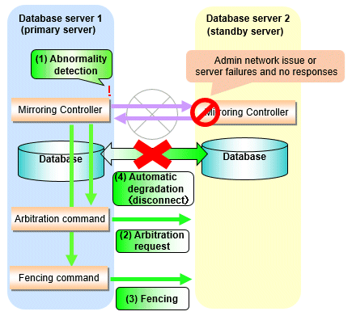
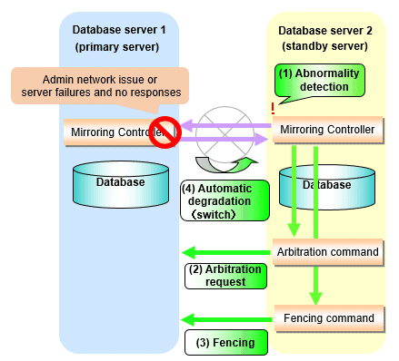
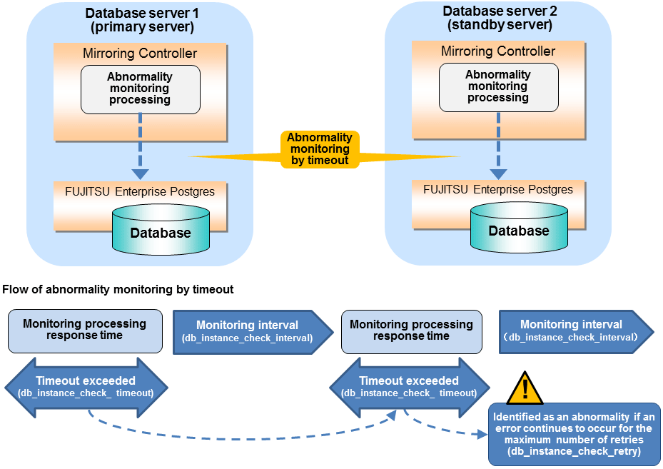
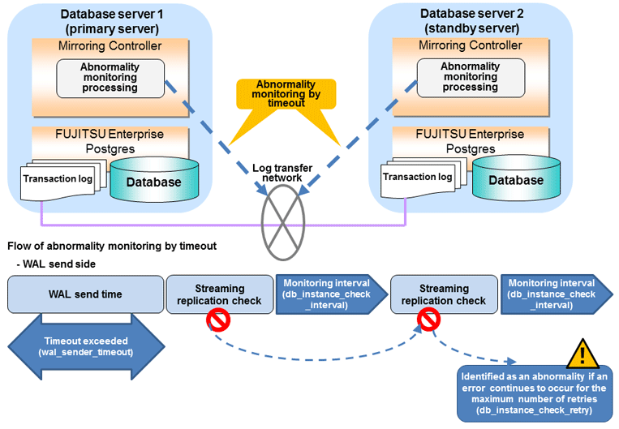
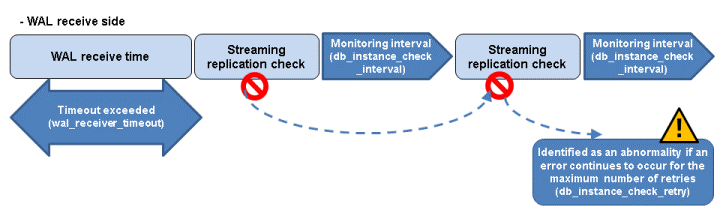
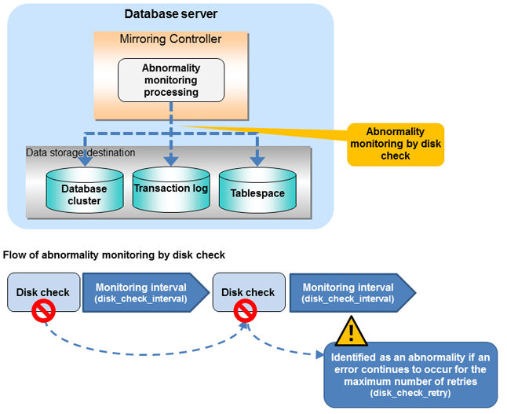

Mirroring Controller uses a monitoring method that outputs an error if the timeout or number of retries is exceeded when accessing resources targeted for monitoring. Setting inappropriate values in these settings may lead to misdetection or a delay in automatic degradation, so you must design these values appropriately.
For example, the following type of issue occurs if the tuning related to abnormality monitoring is not performed appropriately.
If the timeout is too short
Results in redundant degradation and availability falls.
If the timeout is too long
It takes longer for automatic degradation to be performed even when an error affecting operational continuity occurs, potentially causing downtime.
You can optimize degrading operation by editing the values for the parameters in the server configuration file described below in accordance with the system. Refer to "A.4 Server Configuration File" for information on how to edit these parameters.
Tuning for abnormal monitoring of the operating system or server depends on the operation when heartbeat abnormality is detected by the heartbeat monitoring of operating systems or servers.
See
Refer to "1.1.1 Monitoring Using Database Multiplexing Mode" for the operation when heartbeat abnormality is detected in the the heartbeat monitoring of operating systems or servers.
In an operation that use an arbitration server for automatic degeneration, the database server is periodically monitored for abnormalities so that the Mirroring Controller arbitration process can immediately respond to an arbitration request from the Mirroring Controller.The automatic degradation using the arbitration server can optimize the time from error detection to automatic degradation of the operating systems or servers by editing the following parameters.
Parameters for the abnormality monitoring of the operating system or server in the server configuration file of the database server
Parameter | Description |
|---|---|
Abnormality monitoring interval | Mirroring Controller is configured so that abnormality monitoring does not place a load on the system. This parameter does not normally need to be set. (The default is 800 milliseconds.) |
Abnormality monitoring timeout | Take into account the time during which a load is placed continuously on the server or admin network performance. For example, it is envisaged that this parameter will be used in situations such as when performing high-load batch jobs or when a large number of online jobs occur continuously and concurrently. (The default is 1 second.) |
Abnormality monitoring retries | This parameter can be set when needing a safety value for situations in which the value specified for heartbeat_timeout is exceeded, for example, when using systems with fluctuating loads, however, this parameter does not normally need to be set. (The default is 2 times.) |

The expression for calculating the time required to detect an abnormality by Mirroring Controller is shown below.
Abnormality detection time of Mirroring Controller = ( heartbeat_timeout(seconds) + heartbeat_interval(milliseconds) / 1000 ) x ( heartbeat_retry(number of times) + 1)
The abnormality detection time when the default value is used is shown below.
Abnormality detection time of Mirroring Controller = ( 1 + 800 / 1000 ) x ( 2 + 1 ) = 5.4(seconds)
Parameters for the abnormality monitoring of the operating system or server in the arbitration configuration file
Parameter | Description |
|---|---|
Abnormality monitoring interval | Mirroring Controller arbitration process is configured so that abnormality monitoring does not place a load on the system. This parameter does not normally need to be set. (The default is the value set in heartbeat_interval in the server configuration file of the database server.) (milliseconds). |
Abnormality monitoring timeout | Take into account the time during which a load is placed continuously on the server and arbitration network capabilities. (The default is the value set in heartbeat_timeout in the server configuration file of the database server.) (seconds). |
Abnormality monitoring retries | This parameter can be set when needing a safety value for situations in which the value specified for heartbeat_timeout is exceeded, for example, when using systems with fluctuating loads, however, this parameter does not normally need to be set. (The default is the value set in heartbeat_retry in the server configuration file of the database server.) (number of times) |

The expression for calculating the time required to detect an abnormality by Mirroring Controller arbitration process is shown below.
Abnormality detection time of Mirroring Controller arbitration process = ( heartbeat_timeout(seconds) + heartbeat_interval(milliseconds) / 1000 ) x ( heartbeat_retry(number of times) + 1)
The abnormality detection time when the default value is used is shown below.
Abnormality detection time of Mirroring Controller arbitration process = ( 1 + 800 / 1000 ) x ( 2 + 1 ) = 5.4(seconds)
Point
The abnormality detection time of the operation for automatic degradation using the arbitration server can be calculated as follows.
Abnormality detection time = Max(Abnormality detection time by Mirroring Controller, Abnormality detection time by Mirroring Controller arbitration process)
Note
If the heartbeat_interval is set in the arbitration configuration file, the relationship between the parameter for operating system or server abnormality monitoring specified in the server configuration file of the database server file and the heartbeat_interval of the arbitration configuration file must satisfy the following relational expression.
Heartbeat_interval in the arbitration configuration file (milliseconds) / 1000 ) <( heartbeat_timeout(seconds) + heartbeat_interval(milliseconds) / 1000 ) * heartbeat_retry(number of times) + heartbeat_timeout(seconds)
Parameters for the arbitration processing and fencing
Parameter | Description |
|---|---|
Arbitration processing timeout | Take into account the time to perform arbitration processing on the Mirroring Controller arbitration process. The value must be greater than or equal to abnormality detection time of Mirroring Controller arbitration process + fencing_command_timeout in the arbitration configuration file (seconds). |
Fencing timeout | Take into account the time to execute the fencing command (seconds). |
Flow from the abnormality detection to the automatic degeneracy
When performing automatic degradation using the arbitration server, the flow from the abnormality detection in the operating system or server to the occurrence of automatic degeneracy and the parameters is shown below.
Flow from the abnormality detection to the automatic degeneracy | Description | Parameter | |
|---|---|---|---|
(1) Abnormality detection | Mirroring Controller detect the database server operating system or server errors. | Parameters for the abnormality monitoring of the operating system or server in the server configuration file of the database server | |
(2) Arbitration request | Mirroring Controller that detect the operating system or server error asks the Arbitration Server to check the status of the other server's operating system or server. | - | arbitration_timeout in the server configuration file of the database server |
(3) Arbitration processing | The Mirroring Controller arbitration process checks the status of the other server's operating system or server. However, if the result of the operating system or server abnormality monitoring by the arbitration server has been determined before the arbitration request from the Mirroring Controller of the database server, this process is not performed. | Parameters for the abnormality monitoring of the operating system or server in the arbitration configuration file | |
(4) Fencing | If the Mirroring Controller arbitration process determines that the other server is an abnomaly of the operating system or server, it fences the other server and isolates it from the cluster system. If the Mirroring Controller arbitration process determines that the operating system or server status is normal, this process and the (6) are not performed. | fencing_command_timeout in the arbitration configuration file | |
(5) Return of the arbitration results | Returns the results of the arbitration to the Mirroring Controller of the database server that requested the arbitration. | - | |
(6) Automatic degradation | The automatic degradation is performed. If fencing fails in (4), this procedure is not performed. | - | |
-: No associated parameters
Note
If the fencing_command parameter is specified in the server configuration file of the database server, the fencing command is invoked on the database server if fencing is successful on the arbitration server. In that case, add the value of the fencing_command_timeout parameter in the server configuration file of the database server to the estimate.
Figure 2.1 When the Mirroring Controller on the primary server detects an operating system or server error

Figure 2.2 When the Mirroring Controller on the standby server detects an operating system or server error

In an operation that perform automatic degeneration by calling a user exit that determines degeneration, you can optimize the time from operating system or server abnormality detection to automatic degradation by editing the operating system or server abnormality monitoring parameters and parameters related to arbitration processing and fencing in the server configuration file of the database server. Refer to "Parameters for the abnormality monitoring of the operating system or server in the server configuration file of the database server" for information on the operating system or server abnormality monitoring parameters in the server configuration file of the database server.
Parameter | Description |
|---|---|
Arbitration processing timeout | Take into account the time to execute the arbitration command(seconds). |
Fencing timeout | Take into account the time to execute the fencing command (seconds). |
Flow from the abnormality detection to the automatic degeneracy
When performing automatic degradation by calling a user exit that determines degeneration, the flow from the abnormality detection in the operating system or server to the occurrence of automatic degeneracy and the parameters is shown below.
Flow from the abnormality detection to the automatic degeneracy | Description | Parameter |
|---|---|---|
(1) Abnormality detection | Mirroring Controller detect the database server operating system or server errors. | Parameters for the abnormality monitoring of the operating system or server in the server configuration file of the database server |
(2) Arbitration processing | An arbitration command is executed to check the status of the other server's operating system or server. | arbitration_command_timeout in the server configuration file of the database server |
(3) Fencing | If the operating system or server status of the other server is abnomal in (2), it fences the other server and isolates it from the cluster system. If the operating system or server status of the other server is nomal in (2), this process and (4) are not executed. | fencing_command_timeout in the server configuration file of the database server |
(4) Automatic degradation | The automatic degradation is performed. If fencing fails in (3), this procedure is not performed. | - |
-: No associated parameters
Figure 2.3 When the Mirroring Controller on the primary server detects an operating system or server error

Figure 2.4 When the Mirroring Controller on the standby server detects an operating system or server error

In an operation that notify messages, you can optimize the abnormality detection time by editing the operating system or server abnormality monitoring parameters in the server configuration file of the database server. Refer to "Parameters for the abnormality monitoring of the operating system or server in the server configuration file of the database server" for information on the operating system or server abnormality monitoring parameters in the server configuration file of the database server. In addition, when the Mirroring Controller detects an error, it does not perform the arbitration processing, fencing, or automatic degradation, but only notification messages is performed.
In an operation that perform automatic degenerate unconditionally due to heartbeat abnormality, you can optimize the time from operating system or server abnormality detection to automatic degradation by editing the operating system or server abnormality monitoring parameters in the server configuration file of the database server. Refer to "Parameters for the abnormality monitoring of the operating system or server in the server configuration file of the database server" for information on the operating system or server abnormality monitoring parameters in the server configuration file of the database server. In addition, when the Mirroring Controller detects an error, it does not perform the arbitration processing, fencing, or automatic degradation, but only automatic degenerate unconditionally is performed.
Note
Refer to "Appendix D Notes on Performing Automatic Degradation Immediately after a Heartbeat Abnormality" for notes on the operation that perform automatic degenerate unconditionally due to heartbeat abnormality.
In an abnormality monitoring of database pocesses, you can optimize by editing the following parameters in the server configuration file of the database server.
Parameter | Description |
|---|---|
Abnormality monitoring interval | Abnormality monitoring by Mirroring Controller is set so as not to place load on the system, but normally it does not need to be set. (The default is the value set in heartbeat_interval.) (milliseconds) |
Timeout for abnormality monitoring of database processes | Take into account the time during which a load is placed continuously on the database. For example, it is envisaged that this parameter will be used in situations such as when performing high-load batch jobs or when a large number of online jobs occur continuously and concurrently. (The default is the value set in heartbeat_timeout.) (seconds) |
Abnormality monitoring retries | This parameter can be set when needing a safety value for situations in which the value specified for db_instance_check_timeout is exceeded, for example, when using systems with fluctuating loads, however, this parameter does not normally need to be set. (The default is the value set in heartbeat_retry.) (number of times) |

The expression for calculating the time required to detect an abnormality is shown below.
Abnormality detection time = ( db_instance_check_timeout(seconds) + db_instance_check_interval(milliseconds) / 1000 ) x ( db_instance_check_retry(number of times) + 1 )
The abnormality detection time when the default value is used is shown below.
Abnormality detection time = ( 1 + 800 / 1000 ) x ( 2 + 1 ) = 5.4(seconds)
Note
If the db_instance_timeout_action parameter in serverIdentifier.conf is set to "message", and the db_instance_check_timeout parameter is set to a short value, a crash of the database process will be detected as "no response", and it may take time for automatic degradation to occur. Therefore, specify an appropriate timeout for db_instance_check_timeout.
If a high load on the database and an event that prevents connection to an instance occur at the same time, it is judged as abnormal without retrying monitoring.
In an abnormality monitoring of streaming replication, you can optimize by editing the following parameters in the server configuration file of the database server.
Parameter | Description |
|---|---|
Abnormality monitoring interval | Abnormality monitoring by Mirroring Controller is set so as not to place load on the system, but normally it does not need to be set. (The default is the value set in heartbeat_interval.) (milliseconds) |
Abnormality monitoring retries | This parameter can be set when needing a safety value, such as when it is anticipated that a temporary log transfer LAN error may occur, but it does not normally need to be set. (The default is the value set in heartbeat_retry.) (number of times) |
Timeout for abnormality monitoring of streaming replication | Take into account the capacity and load of the log transfer network and the time during which a load is placed continuously on the database. For example, if there is a succession of data update jobs that generate a high WAL volume, you must configure the settings to avoid misdetection. (The default is 60 seconds.) |


The expression for calculating the time required to detect an abnormality is shown below.
Abnormality detection time = ( wal_sender_timeout(seconds) + db_instance_check_interval(milliseconds) / 1000 x ( disk_check_retry(number of times) + 1 ) ) Or, = ( wal_receiver_timeout(seconds) + db_instance_check_interval(milliseconds) / 1000 x ( disk_check_retry(number of times) + 1 ) )
The abnormality detection time when the default value is used is shown below.
Abnormality detection time = 60 + (800 / 1000 x (2 + 1)) = 62.4(seconds)
In an abnormality monitoring of the disk, you can optimize by editing the following parameters in the server configuration file of the database server.
Parameter | Description |
|---|---|
Abnormality monitoring interval | Abnormality monitoring by Mirroring Controller is set so as not to place load on the system, but normally it does not need to be set. (The default is the value set in heartbeat_interval.) (milliseconds) |
Abnormality monitoring retries | This parameter can be set when needing a safety value, such as when it is anticipated that a temporary disk input/output error may occur, but normally it does not need to be set. (The default is the value set in heartbeat_retry.) (number of times) |

The expression for calculating the time required to detect an abnormality is shown below.
Abnormality detection time = disk_check_interval (milliseconds) / 1000 x ( disk_check_retry(number of times) + 1 )
The abnormality detection time when the default value is used is shown below.
Abnormality detection time = 800 / 1000 x ( 2 + 1 ) = 2.4(seconds)
Note
The tuning described above impacts on the time taken from detection of a timeout until switching the primary server. Therefore, modify the values while taking into account the switch/disconnection time, using a design for which misdetection does not occur.
Immediately selecting automatic degradation when a heartbeat abnormality occurs in operating system or server heartbeat monitoring risks causing split brain. Refer to "Appendix D Notes on Performing Automatic Degradation Immediately after a Heartbeat Abnormality" for details.
Information
Mirroring Controller uses connections to database instances and SQL access to monitor abnormality in some resources targeted for monitoring. The connection destination database names and connection user names used for abnormality monitoring conform to the parameters in the server configuration file. The application name is "mc_agent".